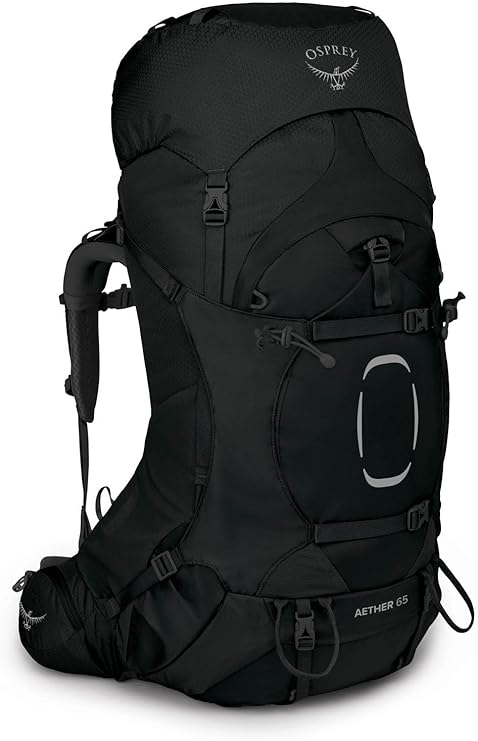

▼ 今回紹介しているギアの公式・購入ページはこちら
OSPREY イーサー65 商品ページを見る【愛用ギア】長期テント泊から縦走まで頼れる相棒「OSPREY イーサー65」徹底レビュー
kote
数々の縦走や山荘バイトへの移動で長年背負い続けている相棒です！20kg近い重装備でも肩や腰への負担が驚くほど少なく、パッキングのしやすさも抜群ですよ。

1. イーサー65を選んだ理由
北アルプスの縦走や数日間に及ぶテント泊山行では、防寒着や食料、撮影機材など荷物が一気に増えます。大型ザックに求められる最も重要な要素は「ブレない安定感」と「荷重分散性能」です。
2. 実際に使ってみて感じた魅力
ヒップベルトと背面のフィット感が非常に高く、足上げの際も背中にしっかり吸い付く感覚があります。フロントアクセスジッパーが大きく開くため、底に入れた荷物もストレスなく取り出せます。